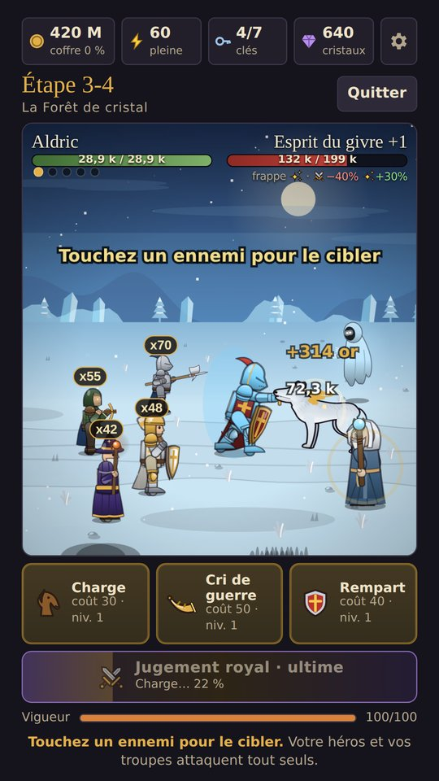
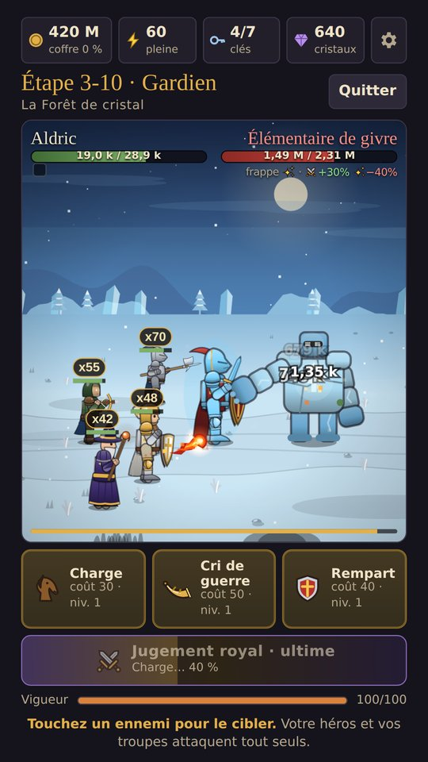
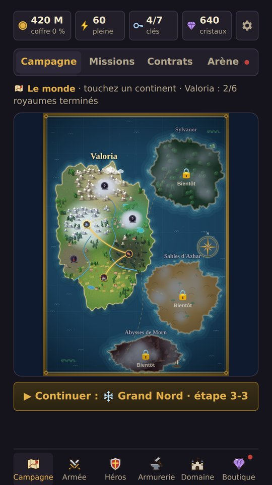
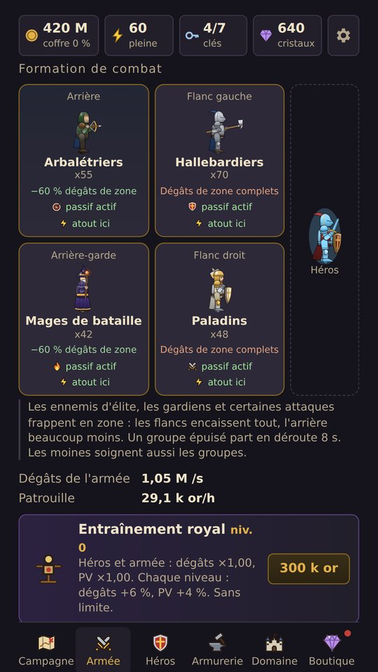
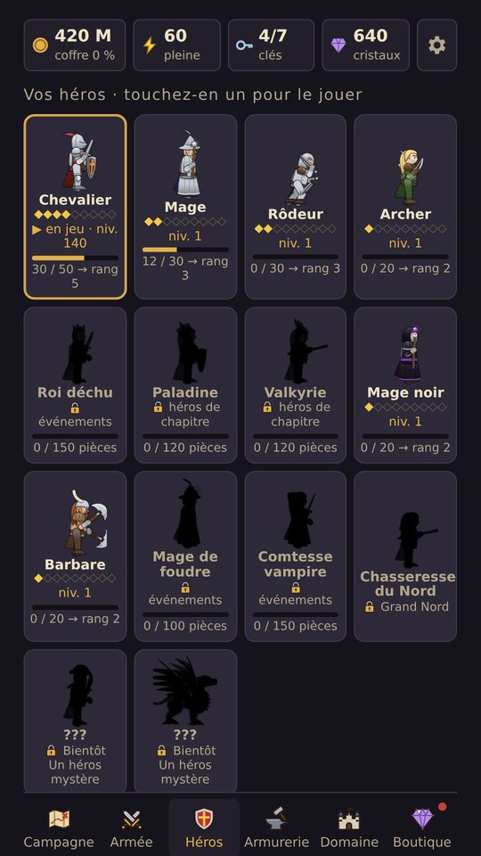
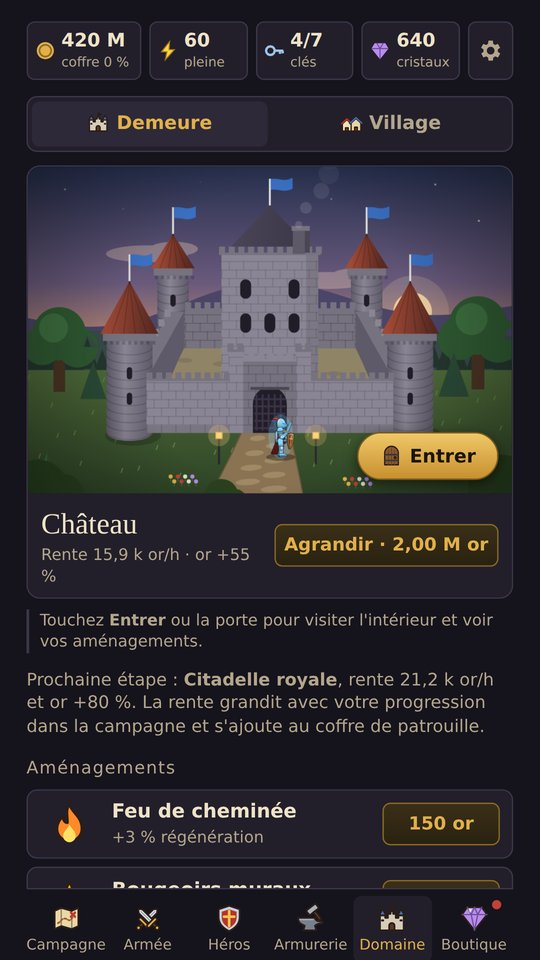
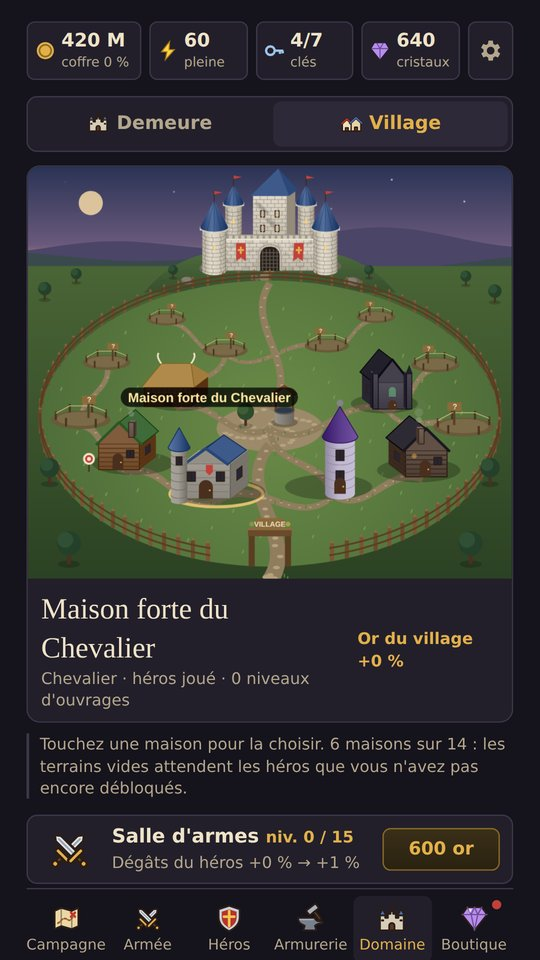

Le jeu
- Des combats en 2DFrappez, lancez vos sorts au bon moment et laissez votre armée se battre à vos côtés.
- Deux campagnesReconquérez Haute-Garde face au Roi Démon, puis affrontez les morts-vivants de la Crypte. Trois difficultés chacune.
- Une armée qui granditÉcuyers, arbalétriers, chevaliers, moines, mages de bataille… leur équipement évolue avec leur rang.
- Sept héros, une aventureChevalier, mage, rôdeur… passez de l'un à l'autre quand vous voulez et entraînez-les tous : la progression est commune.
- L'armurerieSeize rangs d'équipement, du novice au titanesque, qui changent l'apparence de votre héros.
- Votre demeureDe la cabane à la citadelle : agrandissez-la, aménagez-la et entrez la visiter.
Contact
Une question, un bug, une idée ? Le plus rapide est le bouton Signaler un bug dans les réglages du jeu. Vous pouvez aussi écrire à freedomadventuregames@gmail.com.